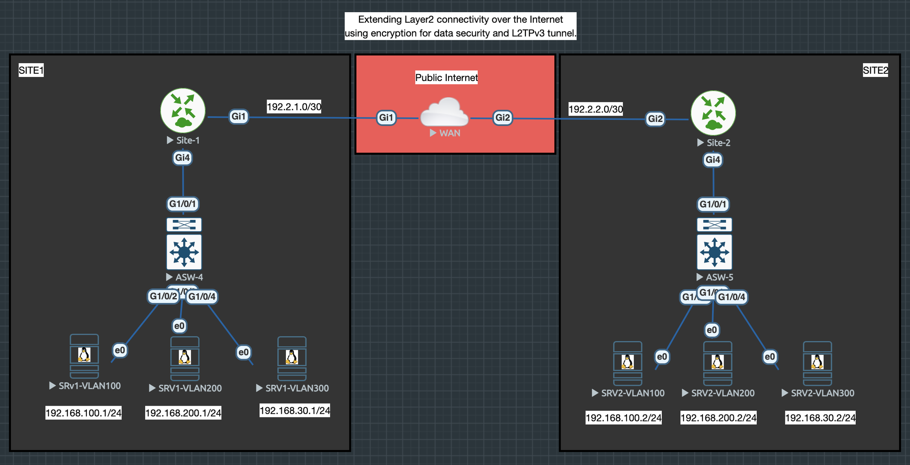
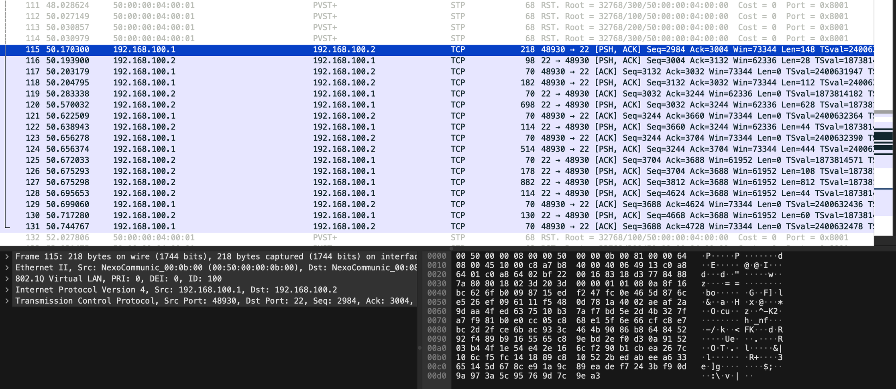
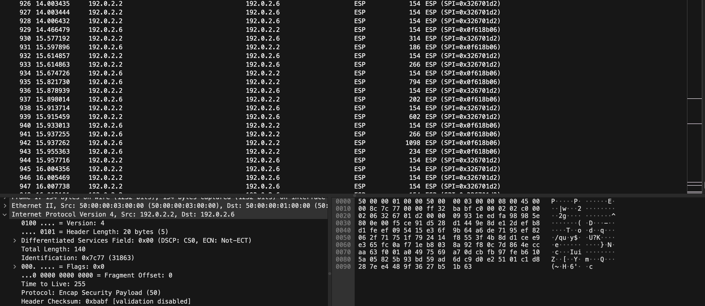
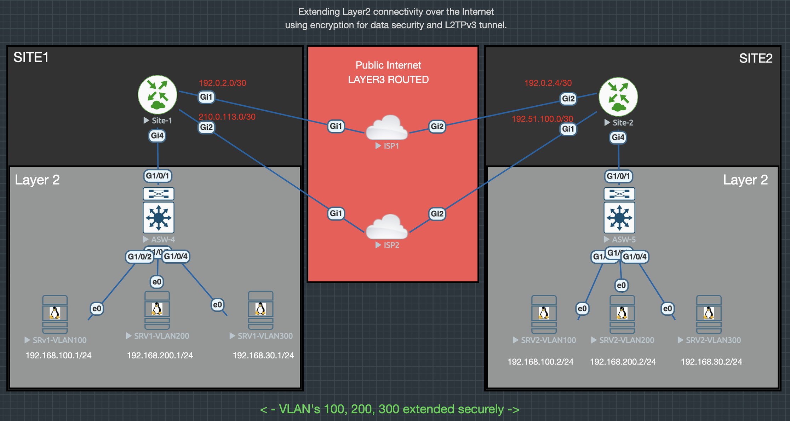
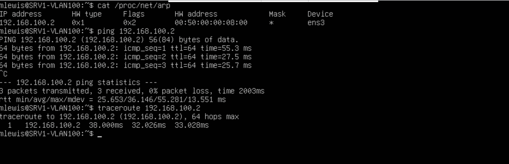
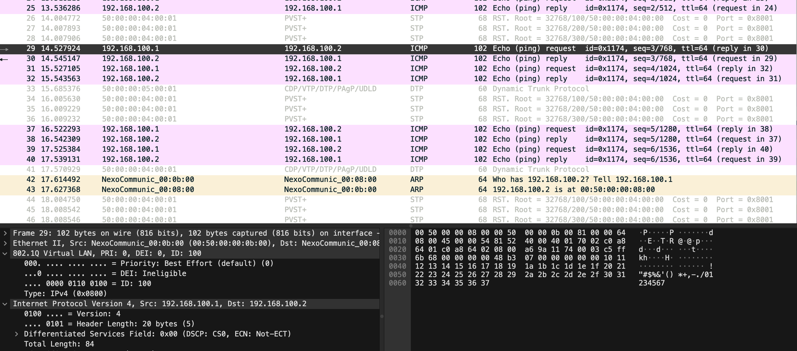

XConnect over L2TPv3 + IPSec
In a previous post, I looked at using L2TP tunnels to support wholesale broadband environments using PPPoE and dynamic RADIUS-based handoff. This time let’s pivot to a slightly different but powerful application: extending Layer 2 connectivity across routed infrastructure using XConnect over L2TPv3 secured with IPSec.
Why XConnect + L2TPv3? Link to heading
XConnect, also known as pseudowire, enables us to extend an Ethernet segment (or even full 802.1Q trunk) transparently across an IP network. Combined with L2TPv3, which encapsulates Layer 2 frames in IP, and IPSec for encryption, we get:
- End-to-end encrypted Layer 2 connectivity
- Routing domain independence — works over any IP routed core
- Realistic lab environments — simulate MPLS/VPLS behaviour
- Use-case versatility — cross-site VLAN bridging, heartbeat links etc

Why IPsec ? Link to heading
Using IPSec allows the traffic to be secured before transmitting it over a public routed infrastucture. Here is a capture of traffic heading to the gateway we can see all the data. and after encapsulation we only see traffic between the tunnel endpoints and its encrypted.


Adding a Secondary Tunnel for Redundancy Link to heading
To improve resilience, we add a second tunnel path to build a redundant XConnect with failover. This protects the connection from WAN or router failure on either side.
- Tunnel 1 to Site 1 via ISP 1
- Tunnel 2 to Site 2 via ISP 2
- Monitor the tunnels using SLA and routing metrics to failover the tunnel path
Full configurations are listed below showing the SLA monitor used and the static route metric adjustments to handle failover with IPSec.

Below is a before and after of the routing table of Site1 you see the path for the Xconnect is via tunnel 1 but when the SLA monitor sees the link fail the route is changed to use tunnel 2 and the xconnect stays up and passing traffic.
Below you see the xconnect endpoint 10.10.10.2 is reachable via tunnel 1
SITE-1#show ip route
Gateway of last resort is not set
10.0.0.0/32 is subnetted, 2 subnets
C 10.10.10.1 is directly connected, Loopback100
S 10.10.10.2 is directly connected, Tunnel1
192.0.2.0/24 is variably subnetted, 3 subnets, 2 masks
C 192.0.2.0/30 is directly connected, GigabitEthernet1
L 192.0.2.2/32 is directly connected, GigabitEthernet1
S 192.0.2.6/32 [1/0] via 192.0.2.1
198.51.100.0/32 is subnetted, 1 subnets
S 198.51.100.2 [1/0] via 201.0.113.1
201.0.113.0/24 is variably subnetted, 2 subnets, 2 masks
C 201.0.113.0/30 is directly connected, GigabitEthernet2
L 201.0.113.2/32 is directly connected, GigabitEthernet2
When the link to ISP 1 is broken
%TRACK-6-STATE: 1 ip sla 1 reachability Up -> Down
Now the endpoint is still reachable but via Tunnel 2 automatically
SITE-1#show ip route
Gateway of last resort is not set
10.0.0.0/32 is subnetted, 2 subnets
C 10.10.10.1 is directly connected, Loopback100
S 10.10.10.2 is directly connected, Tunnel2
192.0.2.0/24 is variably subnetted, 3 subnets, 2 masks
C 192.0.2.0/30 is directly connected, GigabitEthernet1
L 192.0.2.2/32 is directly connected, GigabitEthernet1
S 192.0.2.6/32 [1/0] via 192.0.2.1
198.51.100.0/32 is subnetted, 1 subnets
S 198.51.100.2 [1/0] via 201.0.113.1
201.0.113.0/24 is variably subnetted, 2 subnets, 2 masks
C 201.0.113.0/30 is directly connected, GigabitEthernet2
L 201.0.113.2/32 is directly connected, GigabitEthernet2
Testing Layer 2 Connectivity & VLAN Trunking Link to heading
With the XConnect up, traffic from Server 1 in VLAN 100 can reach Server 2 on the far side, across what appears to be a direct Ethernet trunk — even though it’s transiting a routed, encrypted WAN core like MAGIC.
Below we can see server1 and server2 in VLAN 100 have reachability and only 1 hop away

The local switch Site1 has a trunk contigured on g1/0/1 and only VLAN 100,200,300 allowed
The ports connected to the servers are in the corospoding VLAN but as access ports
ASW-4-S1#show interfaces trunk
Port Mode Encapsulation Status Native vlan
Gi1/0/1 on 802.1q trunking 1
Port Vlans allowed on trunk
Gi1/0/1 100,200,300
A Capture from Site 2 switch shows the traffic from Server 1 reaching server 2 and the correct VLAN 100 is visible

This confirms that:
- Layer 2 continuity is intact
- VLAN tags are preserved
- No routing/NAT/firewall interference exists
Device Configuration Link to heading
Here are the complete configurations from site 1. Note site 2 has a similar configuration with IP address and endpoint changes. feel free use in your own labs and experiment with failover.
Site 1 C8000v Config (Condensed):
hostname SITE-1
!
!
l2tp-class xconnect-l2tp
authentication
password securePassword
!
!
!
!
track 1 ip sla 1 reachability
pseudowire-class xconnect-pw
encapsulation l2tpv3
protocol l2tpv3 xconnect-l2tp
status control-plane route-watch
ip local interface Loopback100
ip pmtu
!
!
!
!
!
!
!
!
!
crypto isakmp policy 10
encryption aes 256
hash sha512
authentication pre-share
group 14
crypto isakmp key SecretPhrase address 192.0.2.6
crypto isakmp key SecretPhrase2 address 198.51.100.2
!
!
crypto ipsec transform-set TSVTI esp-aes 256
mode transport
!
crypto ipsec profile VTI
set transform-set TSVTI
!
!
!
!
!
!
interface Loopback100
description Xconnect Endpoint
ip address 10.10.10.1 255.255.255.255
!
interface Tunnel1
description Encrypted Primary Tunnel to Site2
ip unnumbered GigabitEthernet1
ip mtu 1400
tunnel source 192.0.2.2
tunnel mode ipsec ipv4
tunnel destination 192.0.2.6
tunnel protection ipsec profile VTI
!
interface Tunnel2
description Encrypted Backup Tunnel to Site2
ip unnumbered GigabitEthernet2
ip mtu 1400
tunnel source 201.0.113.2
tunnel mode ipsec ipv4
tunnel destination 198.51.100.2
tunnel protection ipsec profile VTI
!
interface GigabitEthernet1
description ISP1 Prmary Connection
ip address 192.0.2.2 255.255.255.252
negotiation auto
!
interface GigabitEthernet2
description ISP2 Backup Connection
ip address 201.0.113.2 255.255.255.252
negotiation auto
!
!
interface GigabitEthernet4
description Xconnect Interface
no ip address
negotiation auto
no keepalive
xconnect 10.10.10.2 100 encapsulation l2tpv3 pw-class xconnect-pw
!
!
!
ip route 10.10.10.2 255.255.255.255 Tunnel1 name XCONN-PRI track 1
ip route 10.10.10.2 255.255.255.255 Tunnel2 200 name XCONN-SEC
ip route 192.0.2.6 255.255.255.255 192.0.2.1 name SITE2-PRI-TEP
ip route 198.51.100.2 255.255.255.255 201.0.113.1 name SITE2-SEC-TEP
!
!
ip sla 1
icmp-echo 192.0.2.6 source-interface GigabitEthernet1
frequency 5
ip sla schedule 1 life forever start-time now
!
!
end
Site 1 C9000v Switch (Condensed):
hostname ASW-4-S1
!
interface GigabitEthernet1/0/1
description UPLINK_XCONNECT_TO_GW
switchport trunk allowed vlan 100,200,300
switchport mode trunk
no cdp enable
!
interface GigabitEthernet1/0/2
description SRV1-VLAN100
switchport access vlan 100
switchport mode access
!
interface GigabitEthernet1/0/3
description SRV1-VLAN200
switchport access vlan 200
switchport mode access
!
interface GigabitEthernet1/0/4
description SRV1-VLAN300
switchport access vlan 300
switchport mode access
!
!
end
Why This Matters Link to heading
Having XConnect over L2TPv3 + IPSec in your toolkit is a game-changer. It gives you a way to:
- Simulate MPLS/VPLS environments in the lab
- Bridge VLANs across public or test networks securely
- Provide Layer 2 services over routed IP infrastructure
- Prototype new services before full deployment
Keep Learning, Keep Engineering Link to heading
Whether you’re deep into SP architectures or just starting with advanced tunneling concepts, tools like XConnect remind us that networking is more than just routing and switching — it’s about enabling any service over any medium securely and reliably.
Keep experimenting. Keep building. And most importantly — stay curious.